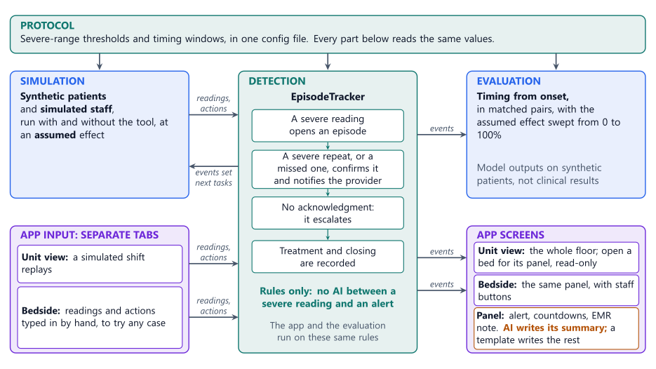

Where the time goes: the pitch team found delays between the first severe reading, confirming that it persists, notifying the right physician, and treatment. Much of that relies on attention and memory, while staff manage their other work.
Results use synthetic patients. No protected health information is used.
EpisodeTracker follows SMFM's persistent-episode definition (Combs et al., 2022), with
timings in one config file:

Unit view: one card per bed. LDR 4 and LDR 6 both confirmed at 08:15; LDR 4's provider responded and LDR 6's did not, so it escalated at 08:26. Open a bed for its panel. Bedside: the same panel with staff buttons, for readings typed in by hand.
An LLM writes the note's summary (Claude, or a local model through Ollama), and a template writes the timeline from the episode's events. Drafting runs outside the alerting loop.
Event or a protocol value. A summary that fails is dropped: the next model
tries, or the note goes on without one.
The same 80 synthetic patients, simulated without and with the tool, at an assumed 50% cut in the time to notice a reading, repeat it, and reach a provider:
| Measure | Without | With | Change |
|---|---|---|---|
| First dose, min from first severe reading (20 matched pairs) | 66.20 | 55.85 | 10.35 sooner |
| Repeat reading, mean min late (50 patients) | 5.70 | 2.86 | 2.84 sooner |
| Timely, of persistent episodes (denominators differ) | 17 of 42 | 23 of 41 | |
| of which by a dose | 5 | 12 | |
| of which by documented resolution | 12 | 11 |